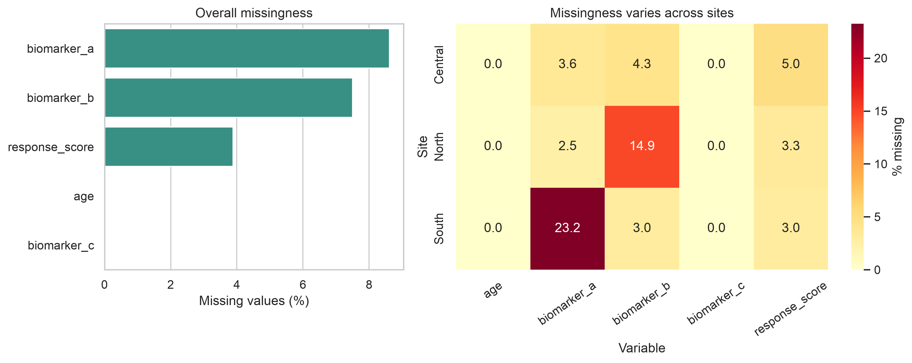
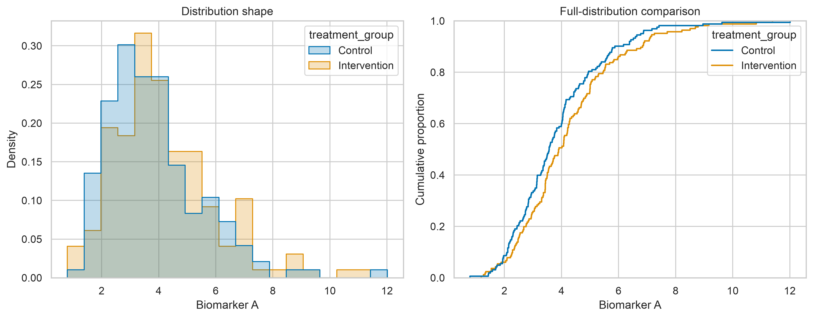
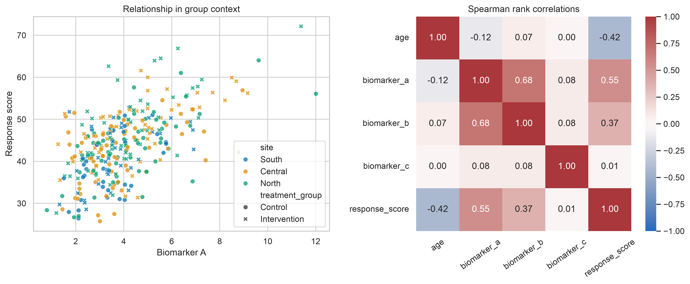
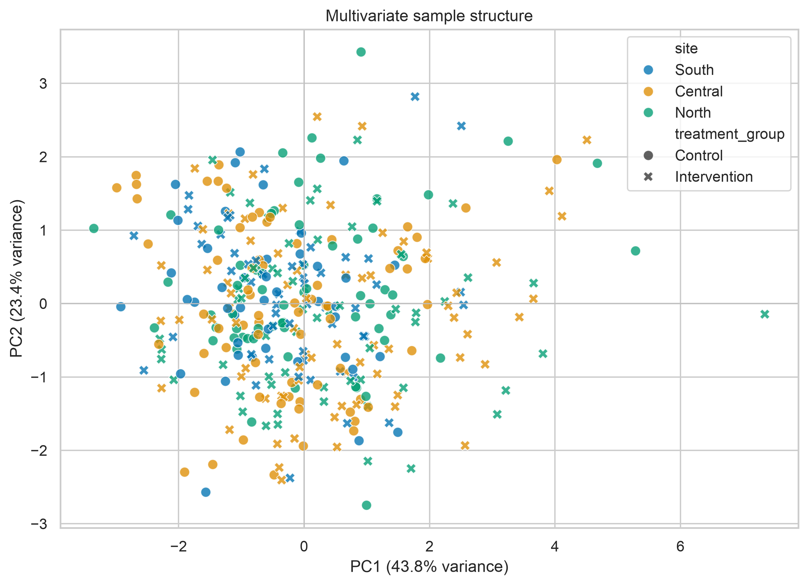

Exploratory Analysis for Complex Data
Exploratory data analysis (EDA) is the disciplined process of learning how a dataset is structured before choosing or trusting a model. For complex data, this means looking beyond individual variables. We examine missingness, skewness, dependence, group structure, unusual observations, and possible data leakage together.
EDA does not prove a hypothesis. It helps us identify patterns worth explaining, assumptions that may fail, and decisions that must be documented before formal modelling.
Learning objectives
By the end of this chapter, you should be able to:
- audit the analytical structure of a complex dataset;
- distinguish missing values, unusual observations, and genuine heterogeneity;
- use distributional, relational, and multivariate views together;
- recognise clustering, confounding, redundancy, and leakage risks;
- create a reproducible exploratory report without altering the source data; and
- translate exploratory findings into defensible modelling decisions.
Why complex data require layered exploration
A summary table can describe each variable separately while concealing the structure that matters most. A dataset may contain repeated observations from the same participant, measurements collected at different sites, highly correlated features, or missing values concentrated in one subgroup. Treating all rows and columns as independent can then lead to misleading conclusions.
A useful EDA moves through several layers:
- Structure — What does one row represent? Which variables identify groups, time points, sites, batches, or outcomes?
- Quality — Are values missing, duplicated, impossible, or inconsistently encoded?
- Distributions — Are variables symmetric, skewed, bounded, zero-inflated, or multimodal?
- Relationships — Which variables move together, and do relationships vary across groups?
- Multivariate structure — Do samples cluster, separate, or appear unusual when many features are considered together?
- Analytical risk — Could grouping, preprocessing, feature construction, or data leakage distort later modelling?
Start with the analytical unit
Before plotting anything, state what a row represents. A row might be one person, one visit, one specimen, one transaction, or one sensor reading. Then identify variables that create dependence between rows.
analysis_unit = "one participant visit"
identifier_columns = ["participant_id", "visit_id"]
group_columns = ["site", "treatment_group"]
time_column = "visit_month"
outcome_column = "response_score"This short declaration prevents a common mistake: treating repeated or nested measurements as though every row were independent.
Build a structural audit
Begin with shape, data types, uniqueness, missingness, and numeric summaries. Keep identifiers out of calculations where they have no analytical meaning.
import pandas as pd
data = pd.read_csv("data/processed/analysis_dataset.csv")
print(data.shape)
print(data.dtypes)
print(data.head())
audit = pd.DataFrame({
"dtype": data.dtypes.astype(str),
"missing_n": data.isna().sum(),
"missing_pct": data.isna().mean().mul(100),
"unique_n": data.nunique(dropna=True),
})
print(audit.sort_values("missing_pct", ascending=False))Check duplicate analytical keys separately from fully duplicated rows.
key_columns = ["participant_id", "visit_id"]
duplicate_keys = data.duplicated(subset=key_columns, keep=False)
duplicate_rows = data.duplicated(keep=False)
print(data.loc[duplicate_keys, key_columns].sort_values(key_columns))
print(f"Fully duplicated rows: {duplicate_rows.sum()}")A repeated participant is not automatically a duplicate. It may be an expected longitudinal record. The analytical key determines whether repetition is valid.
Examine missingness as structure
The percentage missing in each variable is useful, but it does not show whether values are missing together or within particular groups. Explore both marginal and conditional missingness.
missing_by_site = (
data.groupby("site", observed=True)
.agg(
rows=("participant_id", "size"),
biomarker_missing=("biomarker_a", lambda x: x.isna().mean()),
response_missing=("response_score", lambda x: x.isna().mean()),
)
)
print(missing_by_site)If missingness differs by site, time, outcome, or treatment group, complete-case analysis may change the composition of the dataset. Record the pattern before choosing deletion, imputation, or a model that can accommodate missing data.
Explore distributions with context
No single plot fully describes a distribution. Histograms reveal overall shape; empirical cumulative distribution functions (ECDFs) make group comparisons less dependent on bin width; boxplots and violin plots highlight spread and possible heterogeneity.
import matplotlib.pyplot as plt
import seaborn as sns
sns.set_theme(style="whitegrid", context="notebook")
fig, axes = plt.subplots(1, 2, figsize=(11, 4.5))
sns.histplot(
data=data,
x="biomarker_a",
hue="treatment_group",
element="step",
stat="density",
common_norm=False,
ax=axes[0],
)
sns.ecdfplot(
data=data,
x="biomarker_a",
hue="treatment_group",
ax=axes[1],
)
plt.tight_layout()
plt.show()Look for skewness, long tails, floor or ceiling effects, excess zeros, and multiple modes. A second mode may reflect genuine subpopulations, site effects, batch effects, or inconsistent measurement—not merely a need for transformation.
Investigate relationships, not only correlations
Correlation is a compact description of association, not a complete account of the relationship. Pearson correlation is sensitive to linearity and influential observations; Spearman correlation describes monotonic rank association and is often more robust to skewness.
feature_columns = [
"age",
"biomarker_a",
"biomarker_b",
"biomarker_c",
"response_score",
]
pearson = data[feature_columns].corr(method="pearson")
spearman = data[feature_columns].corr(method="spearman")
print(pearson.round(2))
print(spearman.round(2))Always pair a correlation matrix with relational plots. Colouring observations by a meaningful group can reveal confounding, subgroup-specific slopes, or Simpson’s paradox.
sns.scatterplot(
data=data,
x="biomarker_a",
y="response_score",
hue="site",
style="treatment_group",
)
plt.show()Compare groups without hiding sample size
Group summaries should include both the estimate and the number of observations supporting it.
group_summary = (
data.groupby(["site", "treatment_group"], observed=True)
.agg(
n=("participant_id", "size"),
response_mean=("response_score", "mean"),
response_median=("response_score", "median"),
response_sd=("response_score", "std"),
)
.reset_index()
)
print(group_summary)Differences between groups may reflect the exposure of interest, but they may also reflect age, site, batch, measurement timing, or selection. EDA can expose these alternatives; it cannot by itself establish causality.
Identify unusual and influential observations
An unusual value is not automatically an error. It may be a valid extreme, measurement failure, data-entry problem, or member of a rare subgroup. Preserve the original value, investigate its provenance, and document any exclusion.
The interquartile-range rule can flag observations for review:
q1 = data["response_score"].quantile(0.25)
q3 = data["response_score"].quantile(0.75)
iqr = q3 - q1
lower = q1 - 1.5 * iqr
upper = q3 + 1.5 * iqr
review_rows = data.loc[
~data["response_score"].between(lower, upper, inclusive="both")
]
print(review_rows)This rule is a screening device, not an automatic deletion rule. Later, model-specific diagnostics such as leverage, residuals, and Cook’s distance may show whether an observation materially changes an estimate.
Reveal multivariate structure
Principal component analysis (PCA) provides a low-dimensional view of variation across correlated numeric features. Standardise features first when they use different units. Fit preprocessing only to the appropriate training data once a predictive workflow begins.
from sklearn.impute import SimpleImputer
from sklearn.pipeline import make_pipeline
from sklearn.preprocessing import StandardScaler
from sklearn.decomposition import PCA
feature_columns = [
"age",
"biomarker_a",
"biomarker_b",
"biomarker_c",
]
pca_pipeline = make_pipeline(
SimpleImputer(strategy="median"),
StandardScaler(),
PCA(n_components=2),
)
scores = pca_pipeline.fit_transform(data[feature_columns])A PCA plot can reveal broad gradients, clusters, or unusual observations. It does not prove that visible clusters are stable or biologically meaningful. Check whether separation aligns with site, batch, missingness, or another known technical factor before assigning substantive meaning.
Reproducible chapter figures
The companion script generates a synthetic, participant-level dataset for illustration and creates four figures:
- missingness by variable and site;
- distributions by treatment group;
- feature relationships and rank correlations; and
- PCA sample structure.
Run the Python script directly:
python scripts/python/04-generate_exploratory_analysis_figures.pyOr use the Bash wrapper, which runs the same Python workflow:
bash scripts/bash/04-generate_exploratory_analysis_figures.shBoth commands create the same reproducible outputs in results/figures/ and write the illustrative dataset to data/processed/04-exploratory_data.csv.
Missingness by variable and site

The overall bar chart shows scale, while the site-level heatmap shows whether missingness is concentrated within a particular part of the study.
Distributions across groups

The histogram communicates shape; the ECDF provides a bin-independent comparison of the full distributions.
Relationships and dependence

The scatterplot retains group context that the correlation coefficients alone cannot show.
Multivariate sample structure

Interpret separation cautiously. Technical and study-design variables should be checked before a component is given a substantive interpretation.
From exploration to modelling decisions
An EDA should end with an analytical decision log rather than a collection of plots. Record observations and consequences explicitly.
| Exploratory finding | Possible analytical consequence |
|---|---|
| Repeated observations within participants | Use grouped splitting and consider multilevel or longitudinal models |
| Missingness differs by site | Investigate collection processes and use site-aware sensitivity analysis |
| Strongly skewed positive feature | Consider transformation, robust summaries, or a distribution-appropriate model |
| Highly correlated predictors | Assess redundancy, regularisation, or dimension reduction |
| Site-specific relationship | Include interactions or stratified analyses where justified |
| PCA separation aligns with batch | Correct or model the batch effect before substantive interpretation |
| Outcome-derived feature identified | Remove it from predictors to prevent leakage |
Common analytical risks
Exploring the test set
Repeatedly inspecting the held-out test set can influence feature selection and model design. Once the predictive question is defined, reserve the test set for final evaluation and perform model-directed exploration on the training data.
Ignoring clustered observations
Rows from the same participant, household, site, or time series are dependent. Random row-level splitting can place related observations in both training and test sets and overstate generalisation.
Treating association as explanation
A visually strong relationship may arise from confounding, selection, or data collection. Use domain knowledge and an explicit causal or statistical design before giving it explanatory meaning.
Automatically deleting outliers
Removing every extreme value can erase valid heterogeneity and bias results. Investigate, document, and compare sensitivity analyses.
Allowing the outcome into preprocessing
Any feature calculated with future information, test-set information, or the outcome can cause leakage. Fit imputers, scalers, encoders, feature selectors, and dimension-reduction methods inside the training workflow.
Chapter checklist
Before moving to modelling, confirm that you can answer:
- What does one row represent?
- Which observations are repeated, nested, temporal, or spatially related?
- Which variables are identifiers, predictors, outcomes, groups, or metadata?
- Where are missing values concentrated?
- Which distributions require special treatment?
- Which relationships differ across groups?
- Are unusual observations plausible and traceable?
- Does multivariate structure align with technical or substantive variables?
- Could any feature leak information unavailable at prediction time?
- Which exploratory findings change the modelling plan?
Key takeaway
Exploratory analysis is not a decorative prelude to modelling. It is a structured audit of the data-generating and data-collection processes. When distributions, relationships, missingness, and multivariate structure are examined together, the resulting model is easier to justify, diagnose, and reproduce.